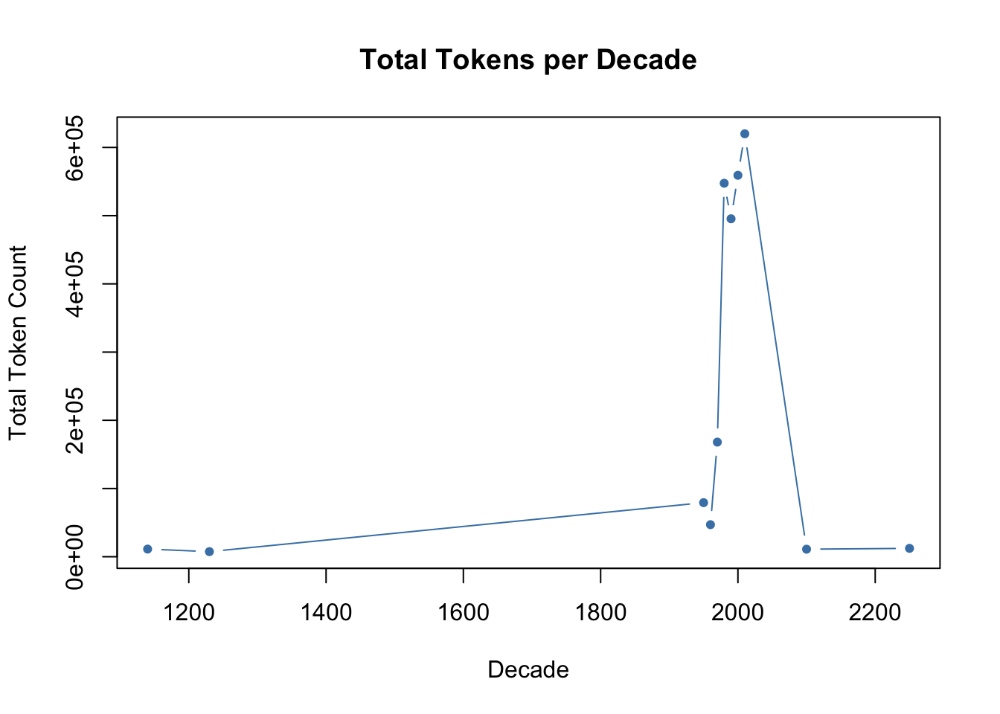

fix_ligatures <- function(text) {
replacements <- c(
"\uf001" = "fi", "\uf002" = "fl", "\ufb00" = "ff", "\ufb01" = "fi",
"\ufb02" = "fl", "\ufb03" = "ffi", "\ufb04" = "ffl", "\ufb05" = "ft", "\ufb06" = "st"
)
for (char in names(replacements)) {
text <- str_replace_all(text, fixed(char), replacements[[char]])
}
text <- stringi::stri_trans_general(text, "NFKC")
return(text)
}
fix_hyphens_apostrophes <- function(text) {
text <- str_replace_all(text, "-\\n", "")
text <- str_replace_all(text, "\\n", " ")
text <- str_replace_all(text, "[‘’ʼ`]", "'")
text <- str_replace_all(text, "[“”]", "\"")
return(text)
}
remove_regex_patterns <- function(text) {
patterns <- c(
# Inline footnotes like ".12"
"(?<=\\S)[.]\\d{1,2}",
# Bracketed footnotes like "(12)" or " 12 "
"(?<=[\\s.,;])\\(?\\d{1,3}\\)?(?=[\\s.,;])",
# Entire lines starting with a number and period
"^\\d{1,3}[.]\\s.*$",
# Remove everything from references sections onward
"(?s)(References|Bibliography|Works Cited)[\\s\\S]+$",
# Common boilerplate copyright/legal references
"(?i)^(Stable URL|JSTOR|Brill|This content downloaded|All use subject|Creative Commons|https?:\\/\\/[^\\s]+).*\\n?",
# Page numbers that are standalone digits
"^\\s*\\d{1,3}\\s*$",
# Bracketed numeric citations [12]
"\\[\\d+\\]",
# JSTOR/Brill-style download info that spans multiple lines until a dashed line
"This content downloaded from[\\s\\S]*?-{5,}",
# Markdown-style headings like "## Section"
"#{2,}",
# IP addresses
"\\d+\\.\\d+\\.\\d+\\.\\d+",
# Standalone numbers
"\\b\\d+\\b",
# JSTOR
"This content.*?https://about\\.jstor\\.org/terms",
# Common boilerplate copyright/legal references
"(?i)^(Stable URL|JSTOR|Brill|This content downloaded|All use subject|Creative Commons|https?:\\/\\/[^\\s]+).*\\n?",
# Bracketed numeric citations [12]
"\\[\\d+\\]"
)
for (p in patterns) {
text <- str_remove_all(text, regex(p, multiline = TRUE, dotall = TRUE, ignore_case = FALSE))
}
return(text)
}
filter_exclusion <- function(text, exclusion) {
words <- unlist(strsplit(text, "\\s+"))
keep <- !tolower(words) %in% tolower(exclusion)
return(paste(words[keep], collapse = " "))
}
remove_notes <- function(text) {
# text <- str_remove_all(text, "(?i)footnotes\\s*\\n.*")
# text <- str_remove_all(text, "(?i)endnotes\\s*\\n.*")
# text <- str_remove_all(text, "(?i)references\\s*\\n.*")
# text <- str_remove_all(text, "(?i)bibliography[\\s\\S]*")
return(text)
}
spellcheck_text <- function(text, correct = TRUE) {
words <- unlist(strsplit(text, "\\s+"))
bad_words <- hunspell(words)[[1]]
corrected <- sapply(words, function(w) {
if (w %in% bad_words) {
suggestion <- hunspell_suggest(w)[[1]]
if (length(suggestion) > 0) return(suggestion[1])
}
return(w)
}, USE.NAMES = FALSE)
return(paste(corrected, collapse = " "))
}
log_removed_words <- function(original, cleaned, logfile, docname) {
original_words <- unlist(strsplit(original, "\\s+"))
cleaned_words <- unlist(strsplit(cleaned, "\\s+"))
removed <- setdiff(original_words, cleaned_words)
if (length(removed) > 0) {
lines <- paste0("[", docname, "] ", removed)
writeLines(lines, con = logfile)
}
}Project Interim Report EPPS6323
Cleaning Functions
Directory Crawl and Processing
main_log_path <- file.path(log_output, "processing_log.txt")
main_log <- file(main_log_path, open = "wt")
writeLines(paste("=== Processing started:", Sys.time(), "===\n"), con = main_log)
decade_folders <- list.dirs(input_path, full.names = TRUE, recursive = FALSE)
walk(decade_folders, function(folder) {
decade <- basename(folder)
decade_output <- file.path(output_path, decade)
dir.create(decade_output, recursive = TRUE, showWarnings = FALSE)
decade_log_path <- file.path(log_output, paste0(decade, "_removed_words.txt"))
decade_log <- file(decade_log_path, open = "wt")
pdf_files <- list.files(folder, pattern = "\\.pdf$", full.names = TRUE)
walk(pdf_files, function(pdf_path) {
out_file <- file.path(decade_output, paste0(tools::file_path_sans_ext(basename(pdf_path)), ".txt"))
if (file.exists(out_file)) {
writeLines(paste(Sys.time(), "SKIPPED:", basename(pdf_path)), con = main_log)
return()
}
raw_text <- pdf_text(pdf_path) %>% paste(collapse = "\n")
raw_text <- fix_ligatures(raw_text)
raw_text <- fix_hyphens_apostrophes(raw_text)
# raw_text <- remove_notes(raw_text)
raw_text <- remove_regex_patterns(raw_text)
raw_text <- stringr::str_squish(raw_text)
# Preserve intermediate state BEFORE exclusion
text_before_exclusion <- raw_text
# Apply spellchecking and exclusion filtering
raw_text <- spellcheck_text(raw_text, correct = TRUE)
final_text <- filter_exclusion(raw_text, exclusion_words)
# Compare pre- and post-exclusion for logging
log_removed_words(text_before_exclusion, final_text, logfile = decade_log, docname = basename(pdf_path))
# Skip output if the cleaned text is empty or too short
if (nchar(final_text) < 10) {
writeLines(paste(Sys.time(), "EMPTY OUTPUT SKIPPED:", basename(pdf_path)), con = main_log)
return()
}
# Save cleaned output
write_file(final_text, out_file)
})
close(decade_log)
})
writeLines(paste("=== Processing completed:", Sys.time(), "===\n"), con = main_log)
close(main_log)Build Corpus
cleaned_path <- file.path(base_path, "output", "cleaned")
# Read all text files recursively from subfolders
corpus_df <- readtext(file.path(cleaned_path, "*", "*.txt"), encoding = "UTF-8")
# Extract decade from the parent folder name
corpus_df$decade <- basename(dirname(corpus_df$doc_id))
# Additional metadata extraction from filename
corpus_df <- corpus_df %>%
mutate(filename = basename(doc_id),
year = stringr::str_extract(filename, "\\d{4}"),
author = stringr::str_extract(filename, "^[A-Za-z]+"))
# Build the corpus
finley_corpus <- corpus(corpus_df)
# Convert year to numeric and calculate decade
docvars(finley_corpus, "decade") <- floor(as.numeric(docvars(finley_corpus, "year")) / 10) * 10
head(docvars(finley_corpus)) decade filename year author
1 1950 1953 Hopper-AtticSilverMines-1953.txt 1953 <NA>
2 1950 1957 Murakawa-Demiurgos-1957.txt 1957 <NA>
3 1950 Finley-GreekCivilizationBased-1959.txt 1959 Finley
4 1950 Howe-LinearBHesiods-1958.txt 1958 Howe
5 1950 Williams-UsesGratusGratia-1959.txt 1959 Williams
6 1960 DuncanJones-CostsOutlaysSummae-1962.txt 1962 DuncanJonesTokenize
finley_tokens <- tokens(finley_corpus,
remove_punct = TRUE,
remove_numbers = TRUE,
remove_symbols = TRUE) %>%
tokens_tolower() %>%
tokens_remove(pattern = stopwords("en")) %>%
tokens_wordstem()
finley_tokens[[1]][1:20] [1] "attic" "silver" "mine" "fourth" "centuri" "b.c" "author"
[8] "s" "r" "j" "hopper" "sourc" "annual" "british"
[15] "school" "athen" "vol" "pp" "publish" "british"finley_dfm <- dfm(finley_tokens)
# Optionally, trim low-frequency words
finley_dfm <- dfm_trim(finley_dfm, min_termfreq = 5)
# Remove 1- or 2-character alphabetic features
finley_dfm <- dfm_remove(finley_dfm, pattern = "^[a-zA-Z]{1,2}$", valuetype = "regex")
# Check output
topfeatures(finley_dfm, 50) roman slave use rome centuri may greek evid
10151 4929 3910 3613 3446 3162 2721 2656
first citi work time new econom two can
2570 2417 2414 2405 2403 2394 2376 2342
histori part empir studi seem land popul product
2169 2149 2146 2124 2121 2076 2031 2003
period import world cit differ social case suggest
1986 1964 1943 1884 1884 1883 1869 1853
itali late like form refer number b.c note
1821 1766 1750 1746 1739 1726 1719 1719
polit general sourc second year relat earli much
1706 1705 1694 1692 1673 1660 1657 1635
inscript societi
1623 1621 summary(finley_corpus, n = 5) # sample of doc-level statsCorpus consisting of 200 documents, showing 5 documents:
Text Types Tokens Sentences decade
1953 Hopper-AtticSilverMines-1953.txt 5656 34981 1374 1950
1957 Murakawa-Demiurgos-1957.txt 3484 18846 904 1950
Finley-GreekCivilizationBased-1959.txt 2754 12445 533 1950
Howe-LinearBHesiods-1958.txt 2947 12315 504 1950
Williams-UsesGratusGratia-1959.txt 339 705 22 1950
filename year author
1953 Hopper-AtticSilverMines-1953.txt 1953 <NA>
1957 Murakawa-Demiurgos-1957.txt 1957 <NA>
Finley-GreekCivilizationBased-1959.txt 1959 Finley
Howe-LinearBHesiods-1958.txt 1958 Howe
Williams-UsesGratusGratia-1959.txt 1959 Williamsndoc(finley_corpus) # number of documents[1] 200#ntoken(finley_corpus) # total token count
nfeat(finley_dfm) # total features after trimming[1] 16643# keyword tracking
#kwic(finley_tokens, pattern = "market", window = 5)
textstat_frequency(finley_dfm, n = 20) feature frequency rank docfreq group
1 roman 10151 1 198 all
2 slave 4929 2 146 all
3 use 3910 3 200 all
4 rome 3613 4 177 all
5 centuri 3446 5 188 all
6 may 3162 6 198 all
7 greek 2721 7 170 all
8 evid 2656 8 188 all
9 first 2570 9 192 all
10 citi 2417 10 164 all
11 work 2414 11 184 all
12 time 2405 12 188 all
13 new 2403 13 200 all
14 econom 2394 14 176 all
15 two 2376 15 195 all
16 can 2342 16 190 all
17 histori 2169 17 190 all
18 part 2149 18 185 all
19 empir 2146 19 172 all
20 studi 2124 20 190 all# Confirm alignment
stopifnot(ndoc(finley_corpus) == length(docvars(finley_corpus, "decade")))
# Create token summary per document
tokeninfo <- data.frame(
Tokens = ntoken(finley_corpus),
Decade = docvars(finley_corpus, "decade")
)
# Convert decade to numeric if needed
tokeninfo$Decade <- as.numeric(as.character(tokeninfo$Decade))
# Aggregate by decade
library(dplyr)
token_by_decade <- tokeninfo %>%
group_by(Decade) %>%
summarise(Tokens = sum(Tokens))
summary(token_by_decade) Decade Tokens
Min. :1140 Min. : 7475
1st Qu.:1955 1st Qu.: 11742
Median :1980 Median : 79292
Mean :1871 Mean :232590
3rd Qu.:2005 3rd Qu.:521476
Max. :2250 Max. :619992 # Plot
with(token_by_decade, plot(Decade, Tokens,
type = "b",
pch = 19,
cex = 0.7,
col = "steelblue",
xlab = "Decade",
ylab = "Total Token Count",
main = "Total Tokens per Decade"))